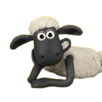
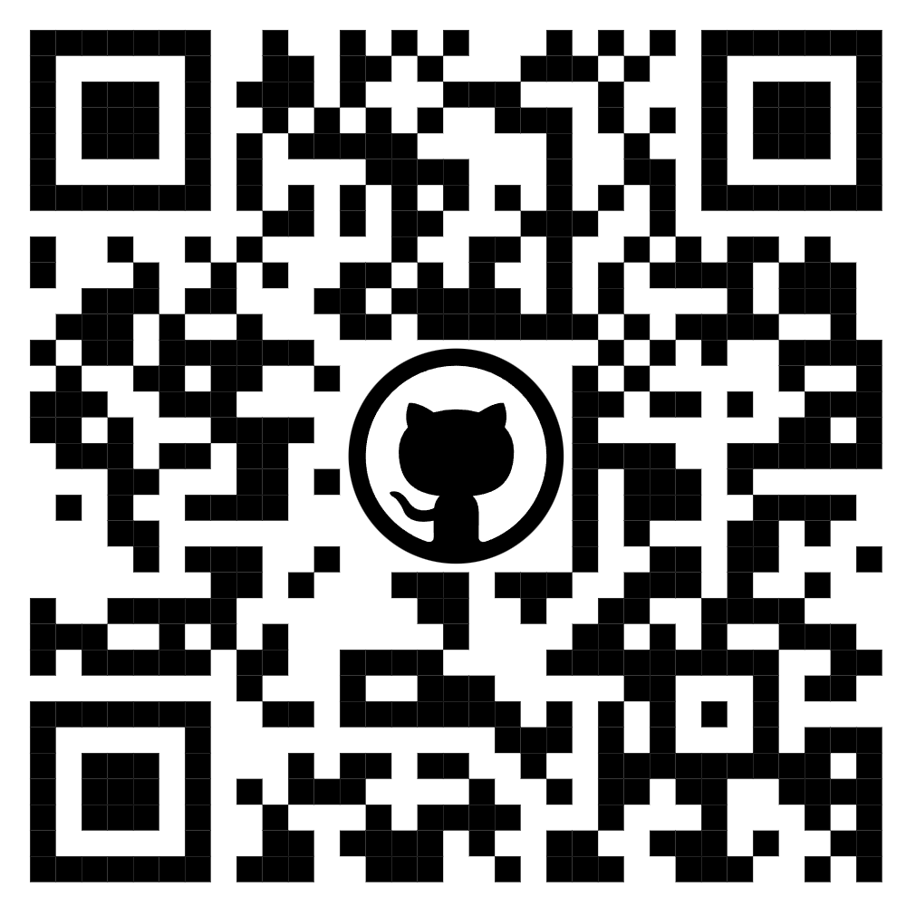

친해지고 싶다면 핸드폰을 꺼내! QR을 찍어!🥳

기본 정보
- 이름: 박수양
- 닉네임: clapsheep
- 나이: 95년생
- MBTI: INTP (사회화 패치 완료)
- 거주지: 서울 사당
- 휴대폰: 010-9424-9077
자기소개
안녕하세요. 서울 10반 여러분, 만나서 반갑습니다!
한학기 동안 잘부탁드리고 친하게 지내요! 낯을 조금 가리지만 사실 금방
친해질 겁니다.
저는 사당에 살아서 멀캠이 가까워요, 도움이 필요하시거나, 술, 밥친구가
필요하시거나, 또 고민있으시면 편하게 자리하시죠! 한학기 동안 화이팅!
개발 경력
프론트엔드 공부를 시작한지... 어느덧 9개월
- 바닐라 자바스트립트 프로젝트 : 마켓컬리 클론코딩
- React 프로젝트 : 독서모임 서비스 <북적북적>
- Next.js 프로젝트 : 온라인 옷장 서비스 <wardrobe>
기술 스택
TypeScript
React
Next.js
Zustand
TanstackQuery
TailwindCSS
MongoDB
Express
학습 목표
SSAFY에서 다음 기술들을 중점적으로 학습하고자 합니다:
- JAVA
- 백엔드 개발
- 알고리즘
목표
- 단기 목표 (1학기): SWEA A등급 취득 및 Java, CS 공부
- 중기 목표 (SSAFY 기간 내): SWEA B등급, Opic, 정보처리기사, AWS 자격증 취득
- 장기 목표 (최종목표): 네이버, 카카오, 라인, 쿠팡, 배달의민족, 당근마켓, 토스 중 한 곳에 프론트엔드 또는 풀스택 개발자로 취업
연락처
GitHub
Kakao